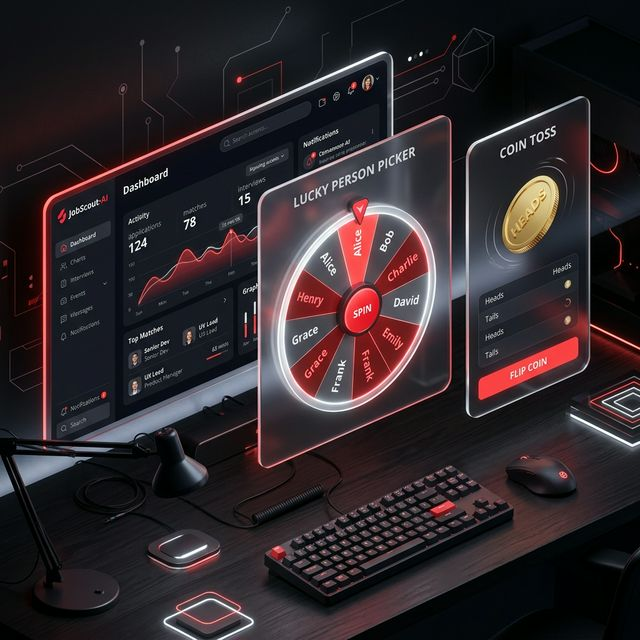

In the fast-paced world of product engineering, the bottleneck is often the transition from idea to prototype. As an engineering leader, I'm always looking for ways to reduce this "time-to-value." Recently, I've been experimenting with Antigravity, an agentic AI coding assistant, and the results have been transformative.

From Orchestrator to Agentic Developer
Traditional coding involves a lot of boilerplate and manual setup. With Antigravity, my role has shifted from writing every line of code to orchestrating high-level logic and reviewing architectural decisions. In just a few days, I was able to build and refine multiple applications that would have previously taken weeks.
Building at Speed
The synergy between a human engineer's strategic oversight and an AI agent's execution power is the future of software development. For example, building JobScout-AI required integrating Playwright for automation, LangChain for AI processing, and Streamlit for the UI. Antigravity handled the heavy lifting of API integrations and UI layout, allowing me to focus on the core workflow design.
Similarly, creating Lucky person and Coin Toss was a matter of hours. These weren't just "Hello World" apps; they include smooth animations, responsive designs, and robust logic—all generated and refined through interactive pair programming with the AI.
Conclusion
AI isn't replacing the engineer; it's supercharging them. By leveraging agentic tools like Antigravity, I can prototype faster, experiment more boldly, and deliver polished products with unprecedented efficiency. This is the new standard for modern engineering leadership.
Back to Portfolio